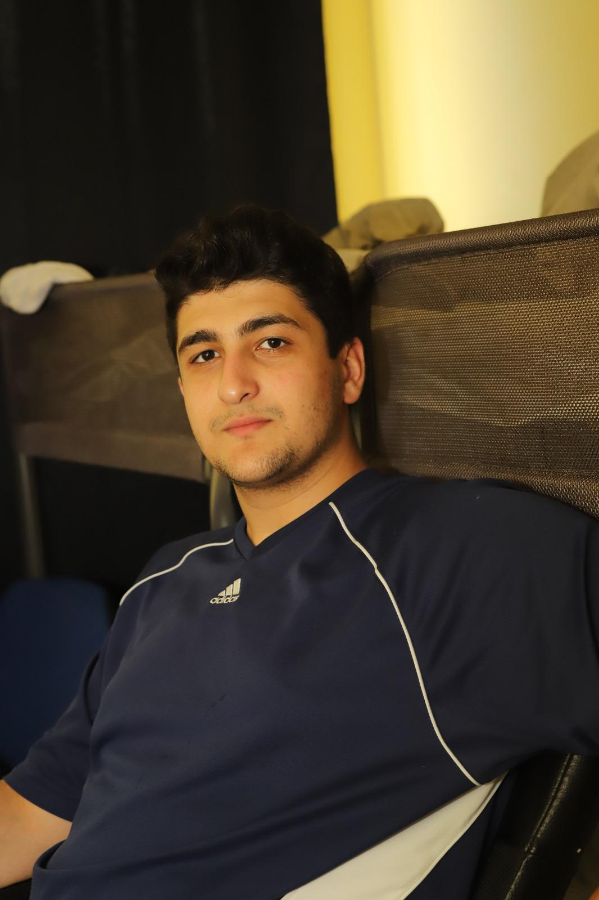

Junior AI Software Engineer - Google (DeepMind)
Okres: 2026 - obecnie
Współpraca przy rozwoju dużych modeli językowych (LLM). Optymalizacja algorytmów uczenia maszynowego i integracja zaawansowanych funkcji AI.

Miasto: Warszawa
E-mail: okunc1@stu.vistula.edu.pl
Telefon: +48 786 449 780
Linki zewnętrzne:
Jestem ambitnym studentem informatyki, którego pasją jest sztuczna inteligencja i uczenie maszynowe. Dążę do tworzenia innowacyjnych rozwiązań, które łączą nowoczesne technologie z codziennymi potrzebami użytkowników.
Okres: 2026 - obecnie
Współpraca przy rozwoju dużych modeli językowych (LLM). Optymalizacja algorytmów uczenia maszynowego i integracja zaawansowanych funkcji AI.
Okres: 2025 - 2026
Udział w badaniach nad modelami Computer Vision oraz wdrażanie rozwiązań chmurowych opartych na Azure AI.
Akademia Finansów i Biznesu Vistula
Kierunek: Informatyka (Tytuł: Inżynier)